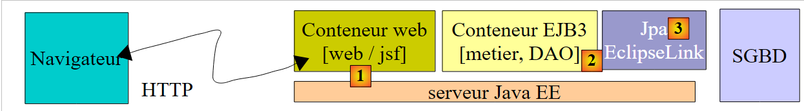
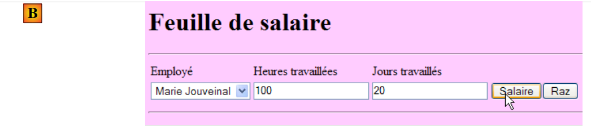
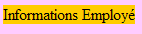
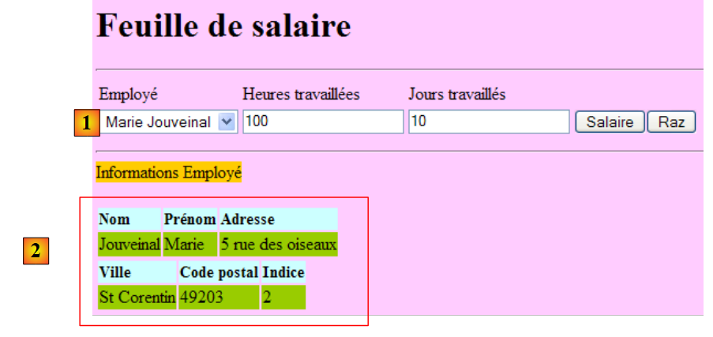

10. Versie 5 - Webapplicatie PAM / JSF
10.1. Architectuur van de applicatie
De architectuur van de webapplicatie PAM ziet er als volgt uit:
 |
In deze versie zal de Glassfish-server alle lagen van de applicatie hosten:
- de laag [web] wordt gehost door de servletcontainer van de server (1 hieronder)
- de overige lagen [metier, DAO, jpa] worden gehost door de EJB3-container van de server (2 hieronder)
 |
De [metier, DAO]-elementen van de applicatie die in de container EJB3 draaien, zijn al beschreven in de client/server-applicatie die in paragraaf 7.1 is behandeld en waarvan de architectuur als volgt was:
 |
De lagen [metier, DAO] draaiden in de container EJB3 van de Glassfish-server en de laag [ui] in een console- of Swing-toepassing op een andere machine:
 |
In de architectuur van de nieuwe applicatie:
 |
hoeft alleen de laag [web / jsf] te worden geschreven. De andere lagen [metier, DAO, jpa] zijn al aanwezig.
In het document [ref3] wordt aangetoond dat een webapplicatie waarbij de weblaag is geïmplementeerd met Java Server Faces een architectuur heeft die vergelijkbaar is met de volgende:
 |
Deze architectuur implementeert het ontwerppatroon MVC (Model, View, Controller). De verwerking van een verzoek van een klant verloopt als volgt:
Als het verzoek wordt gedaan met een GET, worden de volgende twee stappen uitgevoerd:
- verzoek – de browser van de klant doet een verzoek aan de controller [Faces Servlet]. Deze verwerkt alle verzoeken van klanten. Dit is de toegangspoort tot de applicatie. Dit is de C van MVC.
- antwoord – de C-controller vraagt de geselecteerde pagina JSF om zichzelf weer te geven. Dit is de weergave, de V van MVC. De pagina JSF gebruikt een M-sjabloon om de dynamische delen van het antwoord te initialiseren dat naar de klant moet worden verzonden. Dit sjabloon is een Java-klasse die een beroep kan doen op de laag [métier] [4a] om de weergave V te voorzien van de gegevens die deze nodig heeft.
Als het verzoek wordt gedaan met een POST, worden er twee extra stappen ingevoegd tussen het verzoek en het antwoord:
- verzoek – de browser van de klant doet een verzoek aan de controller [Faces Servlet].
- verwerking – de controller C verwerkt dit verzoek. Een verzoek POST gaat namelijk gepaard met gegevens die moeten worden verwerkt. Hiervoor maakt de controller gebruik van applicatiespecifieke gebeurtenisverwerkers die zijn vastgelegd in [2a]. Deze handlers kunnen de bedrijfslaag [2b] nodig hebben. De event handler kan genoodzaakt zijn bepaalde M-modellen [2c] bij te werken. Zodra het verzoek van de klant is verwerkt, kan dit verschillende reacties oproepen. Een klassiek voorbeeld is:
- een foutpagina als het verzoek niet correct kon worden verwerkt
- een bevestigingspagina in het tegenovergestelde geval
De gebeurtenisverwerker retourneert aan de controller [Faces Servlet] een resultaat in de vorm van een tekenreeks, de zogenaamde navigatiesleutel.
- navigatie – de controller kiest de pagina JSF (= weergave) die naar de klant moet worden verzonden. Deze keuze wordt gemaakt op basis van de navigatiesleutel die door de gebeurtenisverwerker is teruggestuurd.
- antwoord – de gekozen pagina JSF stuurt het antwoord naar de klant. Deze pagina gebruikt haar M-sjabloon om de dynamische delen te initialiseren. Dit sjabloon kan op zijn beurt weer een beroep doen op de laag [métier] [4a] om de pagina JSF te voorzien van de gegevens die deze nodig heeft.
In een project JSF:
- is de controller C de servlet [javax.faces.webapp.FacesServlet]. Deze bevindt zich in de bibliotheek [jsf-api.jar].
- De weergaven V worden geïmplementeerd door pagina's JSF.
- De modellen M en de gebeurtenishandlers worden geïmplementeerd door Java-klassen die vaak „backing beans“ worden genoemd.
- In de versies JSF en 1.x worden de definities van de beans en de regels voor het navigeren van de ene pagina naar de andere vastgelegd in het bestand [faces-config.xml]. Daarin staan de lijst met weergaven en de regels voor de overgang van de ene naar de andere. Vanaf versie JSF 2 kunnen de definities van de beans worden gemaakt met behulp van annotaties en kunnen de overgangen tussen pagina's 'hard' in de code van de beans worden vastgelegd.
10.2. Werking van de applicatie
Wanneer de applicatie voor het eerst wordt opgevraagd, verschijnt de volgende pagina:
 |
Vul vervolgens het formulier in en vraag het salaris op:
 |
Je krijgt het volgende resultaat te zien:
 |
Deze versie berekent een fictief salaris. Let niet op de inhoud van de pagina, maar op de opmaak ervan. Wanneer je de knop [Raz] gebruikt, ga je terug naar de pagina [A].
Foutieve invoer wordt gemarkeerd, zoals in het volgende voorbeeld te zien is:
 |
10.3. Het NetBeans-project
We gaan een eerste versie van de applicatie bouwen waarin de laag [métier] wordt gesimuleerd. We zullen de volgende architectuur hanteren:
 |
Wanneer de gebeurtenisverwerkers of de modellen gegevens opvragen bij de laag [métier] [2b, 4a], zal deze hen fictieve gegevens verstrekken. Het doel is om een weblaag te verkrijgen die correct reageert op verzoeken van de gebruiker. Zodra dit is bereikt, hoeven we alleen nog maar de in paragraaf 7.1 ontwikkelde serverlaag te installeren:
 |
Dit wordt versie 2 van de webversie van onze applicatie PAM.
Het NetBeans-project van versie 1 is het volgende Maven-project:
 |
- in [1], de configuratiebestanden
- in [2], de pagina's in XHTML en het stylesheet
- in [3], de klassen van de laag in [web]
- in [4], de objecten die worden uitgewisseld tussen de laag [web] en de laag [métier] en de laag [métier] zelf
- in [5], het berichtenbestand voor de internationalisering van de applicatie
- in [6], de afhankelijkheden van de applicatie
We zullen enkele van deze elementen nader bekijken.
10.3.1. De configuratiebestanden
Het bestand [web.xml] wordt standaard door NetBeans gegenereerd en bevat bovendien de configuratie van een uitzonderingspagina:
- regel 30: [index.html] is de startpagina van de applicatie
- regels 32-39: configuratie van de uitzonderingspagina
De pagina [exception.html] is afgeleid van [ref3]. De code ervan is als volgt:
Elke uitzondering die niet expliciet door de code van de webapplicatie wordt afgehandeld, leidt tot de weergave van een pagina die lijkt op de onderstaande:
 |
Het bestand [faces-config.xml] ziet er als volgt uit:
Let op de volgende punten:
- regels 9-14: het bestand [messages.properties] wordt gebruikt voor de internationalisering van de pagina's. Het is toegankelijk in de pagina's XHTML via de sleutel msg.
- regel 15: hiermee wordt het bestand [messages.properties] aangewezen als het bestand dat bij voorkeur moet worden doorzocht voor foutmeldingen die worden weergegeven door de tags <h:messages> en <h:message>. Hierdoor kunnen bepaalde standaardfoutmeldingen uit JSF worden overschreven. Deze mogelijkheid wordt hier niet gebruikt.
10.3.2. Het stylesheet
Het bestand [styles.css] ziet er als volgt uit:
.libelle{
background-color: #ccffff;
font-family: 'Times New Roman',Times,serif;
font-size: 14px;
font-weight: bold
}
body{
background-color: #ffccff
}
.error{
color: #ff3333
}
.info{
background-color: #99cc00
}
.titreInfos{
background-color: #ffcc00
}
Hier volgen enkele voorbeelden van JSF-code waarin deze stijlen worden gebruikt:
|  |
| |
|  |
10.3.3. Het berichtenbestand
Het berichtenbestand [messages_fr.properties] ziet er als volgt uit:
form.titre=Feuille de salaire
form.comboEmployes.libell\u00e9=Employ\u00e9
form.heuresTravaill\u00e9es.libell\u00e9=Heures travaill\u00e9es
form.joursTravaill\u00e9s.libell\u00e9=Jours travaill\u00e9s
form.heuresTravaill\u00e9es.required=Indiquez le nombre d'heures travaill\u00e9es
form.heuresTravaill\u00e9es.validation=Donn\u00e9e incorrecte
form.joursTravaill\u00e9s.required=Indiquez le nombre de jours travaill\u00e9s
form.joursTravaill\u00e9s.validation=Donn\u00e9e incorrecte
form.btnSalaire.libell\u00e9=Salaire
form.btnRaz.libell\u00e9=Raz
exception.header=L'exception suivante s'est produite
exception.httpCode=Code HTTP de l'erreur
exception.message=Message de l'exception
exception.requestUri=Url demand\u00e9e lors de l'erreur
exception.servletName=Nom de la servlet demand\u00e9e lorsque l'erreur s'est produite
form.infos.employ\u00e9=Informations Employ\u00e9
form.employe.nom=Nom
form.employe.pr\u00e9nom=Pr\u00e9nom
form.employe.adresse=Adresse
form.employe.ville=Ville
form.employe.codePostal=Code postal
form.employe.indice=Indice
form.infos.cotisations=Informations Cotisations sociales
form.cotisations.csgrds=CSGRDS
form.cotisations.csgd=CSGD
form.cotisations.retraite=Retraite
form.cotisations.secu=S\u00e9curit\u00e9 sociale
form.infos.indemnites=Informations Indemnit\u00e9s
form.indemnites.salaireHoraire=Salaire horaire
form.indemnites.entretienJour=Entretien / Jour
form.indemnites.repasJour=Repas / Jour
form.indemnites.cong\u00e9sPay\u00e9s=Cong\u00e9s pay\u00e9s
form.infos.salaire=Informations Salaire
form.salaire.base=Salaire de base
form.salaire.cotisationsSociales=Cotisations sociales
form.salaire.entretien=Indemnit\u00e9s d'entretien
form.salaire.repas=Indemnit\u00e9s de repas
form.salaire.net=Salaire net
Deze berichten worden allemaal gebruikt op de pagina [index.xhtml], met uitzondering van die op de regels 11-15, die worden gebruikt op de pagina [exception.xhtml].
10.3.4. Het bereik van de beans
De bean [web.forms.Form] heeft een bereik op verzoek:
import java.io.Serializable;
import javax.faces.bean.ManagedBean;
import javax.faces.bean.RequestScoped;
@ManagedBean
@RequestScoped
public class Form implements Serializable {
De bean [web.utils.ChangeLocale] heeft een bereik op applicatieniveau:
package web.utils;
import java.io.Serializable;
import javax.faces.bean.ManagedBean;
import javax.faces.bean.SessionScoped;
@ManagedBean
@SessionScoped
public class ChangeLocale implements Serializable{
// de taal van de pagina's
private String locale="fr";
public ChangeLocale() {
}
public String setFrenchLocale(){
locale="fr";
return null;
}
public String setEnglishLocale(){
locale="en";
return null;
}
public String getLocale() {
return locale;
}
public void setLocale(String locale) {
this.locale = locale;
}
}
10.3.5. De laag [métier]
De laag [métier] implementeert de volgende interface IMetierLocal:
package metier;
import java.util.List;
import javax.ejb.Local;
import jpa.Employe;
@Local
public interface IMetierLocal {
// loonstrook opvragen
FeuilleSalaire calculerFeuilleSalaire(String SS, double nbHeuresTravaillées, int nbJoursTravaillés );
// lijst met werknemers
List<Employe> findAllEmployes();
}
Deze interface wordt gebruikt in het servergedeelte van de client/server-toepassing die in paragraaf 7.1 wordt beschreven.
De klasse Metier, die we gaan gebruiken om de laag [web] te testen, implementeert deze interface als volgt:
package metier;
...
public class Metier implements IMetierLocal {
// werknemerswoordenboek geïndexeerd op nummer SS
private Map<String,Employe> hashEmployes=new HashMap<String,Employe>();
// lijst van werknemers
private List<Employe> listEmployes;
// loonstrook opvragen
public FeuilleSalaire calculerFeuilleSalaire(String SS,
double nbHeuresTravaillées, int nbJoursTravaillés) {
// de medewerker met nr. SS ophalen
Employe e=hashEmployes.get(SS);
// een fictieve loonstrook genereren
return new FeuilleSalaire(e,new Cotisation(3.49,6.15,9.39,7.88),new ElementsSalaire(100,100,100,100,100));
}
// lijst met werknemers
public List<Employe> findAllEmployes() {
if(listEmployes==null){
// een lijst met twee werknemers aanmaken
listEmployes=new ArrayList<Employe>();
listEmployes.add(new Employe("254104940426058","Jouveinal","Marie","5 rue des oiseaux","St Corentin","49203",new Indemnite(2,2.1,2.1,3.1,15)));
listEmployes.add(new Employe("260124402111742","Laverti","Justine","La brûlerie","St Marcel","49014",new Indemnite(1,1.93,2,3,12)));
// werknemerswoordenboek geïndexeerd op nummer SS
for(Employe e:listEmployes){
hashEmployes.put(e.getSS(),e);
}
}
// de lijst met werknemers wordt weergegeven
return listEmployes;
}
}
We laten het aan de lezer over om deze code te ontcijferen. Let op de gebruikte methode: om te voorkomen dat we het EJB-gedeelte van de applicatie hoeven te implementeren, simuleren we de laag [métier]. Zodra de laag [web] als correct is aangemerkt, kunnen we deze vervangen door de daadwerkelijke laag [métier].
10.4. Het formulier [index.xhtml] en het bijbehorende sjabloon [Form.java]
We bouwen nu de pagina XHTML van het formulier en het bijbehorende sjabloon.
Aanbevolen lectuur in [ref3]:
- voorbeeld nr. 3 (mv-jsf2-03) voor de lijst met tags die in een formulier kunnen worden gebruikt
- voorbeeld nr. 4 (mv-jsf2-04) voor de door het model gevulde keuzelijsten
- voorbeeld nr. 6 (mv-jsf2-06) voor het valideren van invoer
- voorbeeld nr. 7 (mv-jsf2-07) voor het beheer van de knop [Raz]
10.4.1. stap 1
Vraag: Maak het formulier [index.xhtml] en het bijbehorende model [Form.java] die nodig zijn om de volgende pagina te verkrijgen:
 |
De invoercomponenten zijn als volgt:
id | type JSF | sjabloon | rol | |
comboEmployes | <h:selectOneMenu> | String comboEmployesValue List<Medewerker> getEmployes() | bevat de lijst met werknemers in de vorm "voornaam achternaam". | |
heuresTravaillees | <h:inputText> | String heuresTravaillées | aantal gewerkte uren - werkelijk aantal | |
joursTravailles | <h:inputText> | String joursTravaillés | aantal gewerkte dagen - geheel getal | |
btnSalaire | <h:commandButton> | start de loonberekening | ||
btnRaz | <h:commandButton> | zet het formulier terug in de oorspronkelijke staat |
- de methode getEmployes retourneert een lijst met werknemers die wordt opgehaald uit de laag [métier]. De objecten die door de keuzelijst worden weergegeven, hebben als attribuut itemValue het nummer SS van de medewerker en als attribuut itemLabel een tekenreeks bestaande uit de voor- en achternaam van de medewerker.
- De knoppen [Salaire] en [Raz] zijn voorlopig niet gekoppeld aan gebeurtenishandlers.
- De geldigheid van de invoer wordt gecontroleerd.

Test deze versie. Controleer met name of invoerfouten correct worden gemeld.
Opmerking: het is belangrijk dat de id-attributen van de componenten op de pagina geen tekens met accenten bevatten. Met Glassfish 3.1.2 crasht de applicatie hierdoor.
10.4.2. stap 2
Vraag: vul het formulier [index.xhtml] en het bijbehorende sjabloon [Form.java] in om de volgende pagina te krijgen zodra op de knop [Salaire] is geklikt:
 |
De knop [Salaire] wordt gekoppeld aan de gebeurtenisverwerker calculerSalaire van het sjabloon. Deze methode maakt gebruik van de methode calculerFeuilleSalaire van de laag [métier]. Deze loonstrook wordt opgesteld voor de werknemer die is geselecteerd in [1].
In het sjabloon wordt de loonstrook weergegeven door het volgende privéveld:
private FeuilleSalaire feuilleSalaire;
met de methoden get en set.
Om de informatie in dit object op te halen, kunnen op de pagina JSF uitdrukkingen zoals de volgende worden geschreven:
<h:outputText value="#{form.feuilleSalaire.employe.nom}"/>
De waarde van het attribuut **value** wordt als volgt berekend:
[form].getFeuilleSalaire().getEmploye().getNom(), waarbij [form] een instantie van de klasse [Form.java] vertegenwoordigt. De lezer kan nagaan of de hier gebruikte methoden get inderdaad respectievelijk in de klassen [Form], [FeuilleSalaire] en [Employe] voorkomen. Als dat niet het geval zou zijn, zou er bij het evalueren van de uitdrukking een uitzondering worden gegenereerd.
Test deze nieuwe versie.
10.4.3. stap 3
Vraag: vul het formulier [index.xhtml] en het bijbehorende sjabloon [Form.java] in om de volgende aanvullende informatie te verkrijgen:
 |
We volgen dezelfde werkwijze als eerder. Er is een probleem met het euro-valutateken dat we bijvoorbeeld in [1] hebben. In het kader van een geïnternationaliseerde toepassing zou het beter zijn om het weergaveformaat en het valutateken van de gebruikte locale te hebben (en, de, fr, ...). Dit kan als volgt worden verkregen:
<h:outputFormat value="{0,number,currency}">
<f:param value="#{form.feuilleSalaire.employe.indemnite.entretienJour}"/>
</h:outputFormat>
Men had ook kunnen schrijven:
<h:outputText value="#{form.feuilleSalaire.employe.indemnite.entretienJour} є">
maar met de locale en_GB (Engels GB) zou de weergave nog steeds in euro's zijn, terwijl het pond (£) zou moeten worden gebruikt. Met de tag <h:outputFormat> kun je informatie weergeven op basis van de locale van de weergegeven pagina JSF:
- regel 1: geeft de parameter {0} weer, een getal (number) dat een geldbedrag (currency) vertegenwoordigt
- regel 2: de tag <f:param> kent een waarde toe aan de parameter {0}. Een tweede tag <f:param> zou een waarde toekennen aan de parameter {1}, enzovoort.
10.4.4. stap 4
Aanbevolen lectuur: voorbeeld nr. 7 (mv-jsf2-07) in [ref3].
Vraag: vul het formulier [index.xhtml] en het bijbehorende sjabloon [Form.java] in om de knop [Raz] te beheren.
De knop [Raz] zet het formulier terug in de toestand waarin het zich bevond toen het voor het eerst werd opgevraagd via een GET. Hier doen zich verschillende problemen voor. Sommige daarvan zijn uitgelegd in [ref3].
Het formulier dat door de knop [Raz] wordt weergegeven, is niet het volledige formulier, maar slechts het gedeelte saisie ervan:

Dit resultaat kan worden verkregen met een <f:subview>-tag die als volgt wordt gebruikt:
<f:subview id="viewInfos" rendered="#{form.viewInfosIsRendered}">
... la partie du formulaire qu'on veut pouvoir ne pas afficher
</f:subview>
De tag <f:subview> omvat het gehele deel van het formulier dat kan worden weergegeven of verborgen. Elke component kan worden weergegeven of verborgen met behulp van het attribuut rendered. Als rendered="true", wordt de component weergegeven; als rendered="false", wordt deze niet weergegeven. Als het attribuut rendered zijn waarde in het model aanneemt, kan de weergave van de component programmatisch worden geregeld.
Hierboven wordt de weergave van de weergave viewInfos geregeld met het volgende veld:
private boolean viewInfosIsRendered;
samen met de bijbehorende methoden get en set. De methoden die de klikken op de knoppen [Salaire] en [Raz] afhandelen, zullen deze booleaanse waarde bijwerken, afhankelijk van of de weergave viewInfos al dan niet moet worden weergegeven.